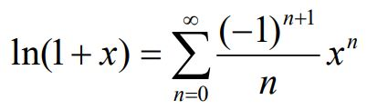

Reverse: зміна порядку символів у рядку на протилежний
Fibonacci: розрахунок чисел фібоначі до N-ого числа
Taylor series ln(x+1): розрахунок натурального логарифма ln(x+1) з використанням ряду Тейлора

Square: знаходження площі квадрата з діагоналлю d. d2/2
Trains: запити до потягів